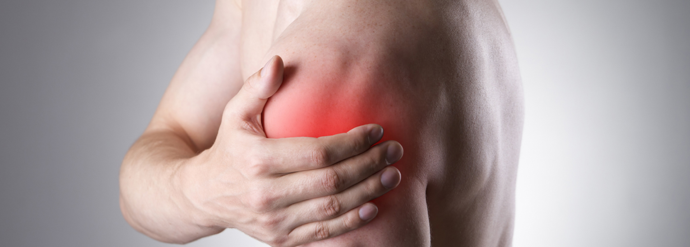
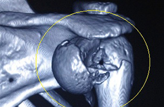
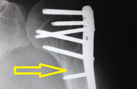
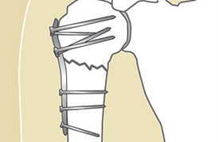
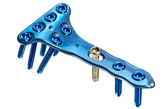
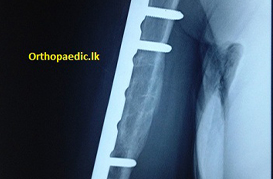
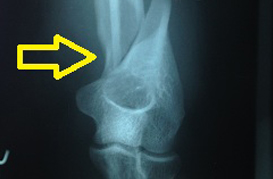
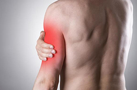

Overview

FRACTURE OF UPPER ARM (HUMERUS) CLOSER TO THE SHOULDER

How Does It Happen ?
This segment of the upper arm makes the shoulder joint with shoulder blades (scapula).Fractures of this segment of bone of the upper arm (Humerus) are serious injuries. The fracture is commoner in the elderly with osteoporosis and occurs with simple falls on the shoulder. In the young it follows high energy injuries to the shoulder

What Is The Treatment For This Injury?
This fracture can be treated without operation if the broken pieces of bones are maintaining alignment. Keeping the arm still for about six weeks aids healing. It usually heals without deformities. However, displaced fractures and when the bone is broken into many pieces, it needs fixation with a plate and screws. It will restore normal structure of bone.

Advantages Of Fixations Over Non Operative Care?
Fixation of the fracture, even if it has not moved away, will immediately relieve pain. There will be no chance of bone pieces moving away during the period of healing which will later require operation.
Shoulder is notorious joint to get stiff with slightest trauma, immobilization. After fixation the joint can be moved as early as two weeks after operation. As motion can be begun early chances of joint stiffness is less.

What Is Used To Fix The Fracture?
There are specially designed plates for this area of the bone. These plates are more suitable for osteoporotic bone.

Is It A Big Operation?
I would not say so. You will have a cut (incision) about 5-6cm at the side of the shoulder or in front of the shoulder. Operation will take about 60-90 minutes. You could be discharged in 1-2 days.
Will It Be Painful?
Your pain will be controlled with medicines. There will be some discomfort. But it will ease off.

When Can I Move The Joint ?
Your arm will be immobilized in a shoulder immobilizer. You need to wear this for the first three weeks. No movement should be allowed during this time. Movements can be begun thereafter. It will be a very gradual process.

When Is The Wound Check Due?
The wound heals in about 7-10 days. The wound is checked at discharge and then in a week. Absorbable stitches are used in a regular case.

Will The Metal Need To Be Removed ?
Not in every case.
FRACTURE OF SHAFT OF THE HUMERUS

How Does It Happen ?
A force applied on the mid part of the upper arm could break the bone. The facture is common to damage a nerve running near the mid part of the bone. If this occurs you will find it difficult to lift your wrist with the palm faced downwards.
What Is The Treatment?
This can too be treated without an operation; Provided there is no damage to the nerve and the bone fragments are stable enough to maintain its alignment. The upper arm will be put in a plaster of Paris slab. It will take about six weeks to heal.
Can This Be Operated ?
Associated nerve damage and bone pieces not keeping in line warrant operative fixation of the bone. This provides an opportunity to look at the nerve and repair if it is damaged at the same time.
The normal structure of the bone is restored. After the operation the upper arm will be further supported with a plaster of Paris slab. The bone could be fixed with plate and screws or a metal rod inserted into the canal of the bone.
How Could The Nerve Damage Be Treated
Damage to the nerve will need additional treatment in the means of active and passive physiotherapy, wearing of splints until recovery. If the wrist function can still not be regained, additional surgical procedure may be required.

When Can I Be Active ?
When the facture is fixed and is secure, shoulder and the elbow joints can start moving. There is less chance of getting stiffness of the joints. None-operatively treated patients have to wait six weeks before starting movements.

What Are The Possible Complications Of Treatment ?
Fractures treated without operation may not heal after adequate immobilization. Then it will need operation to correct it. Fractures fixed with plate and screws may show loosening, screw breaks, fracture not healing. These are rare but it can happen.
FRACTURE OF DISTAL HUMERUS BONE OF THE UPPER ARM CLOSER TO THE ELBOW JOINT

How Does It Happen ?
Injuries to this part of the bone most of the time involve the elbow joint. It happens when you fall and land on the elbow. This is a very serious injury.This should only be treated operatively. Any other treatment will result in very serious consequences and deformities. This injury needs urgent medical attention.

What Changes Can Occur With Injuries To This Area?
The joint may show significant swelling. Nerve and blood supply to the forearm may be damaged compromising survival of tissues in the forearm. You may feel the fingers going numb.

Any First Aid That Can Be Done?
You may splint the arm as it is. Apply some ice over the site. Apply a collar and cuff if the elbow can be bent.

What Tests Will Be Done?
A plain x-ray is a must in this fracture. CT scan will be arranged in serious fractures.
How Could This Be Treated?
Simple brakes can be operated without delay. Most of the time, the bone will be fixed with a plate and screws. In other cases, the operation is done once the swelling settles down. This will take couple of days. Until such time the arm is put in a plaster slab/external fixating frame. There are specially design plates and screws to fix fracture of this part of the bone. This is done under general anaesthetic. You will have a surgical wound over the back of your elbow. The arm will be supported with a plaster slab after the operation.
If the blood supply to the forearm is affected or if the forearm shows gross swelling accompanying with severe pain, you will be subjected to skin releasing surgical incisions over forearm under general anaesthetic. This will avoid damage to muscles in the forearm from compromised oxygen supply. The bone fixation may get delayed in such instances.
How Long Will It Take To Heal?
The wound will heal in about ten days. Swelling will take about two weeks to settle. The fracture usually heals in six weeks. Time may be longer in difficult cases.
When Can I Start Joint Movement?
The elbow is likely to develop stiffness with slightest injury and with a short period of immobilization. Joint movement can be commenced as early as two weeks after a stable fixation. It will take some time to get back to normal level of activity.